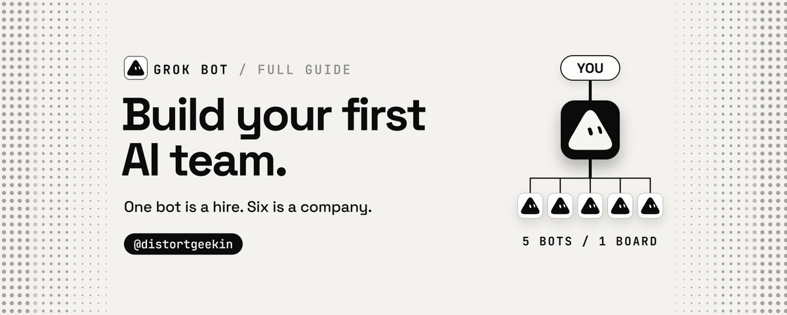
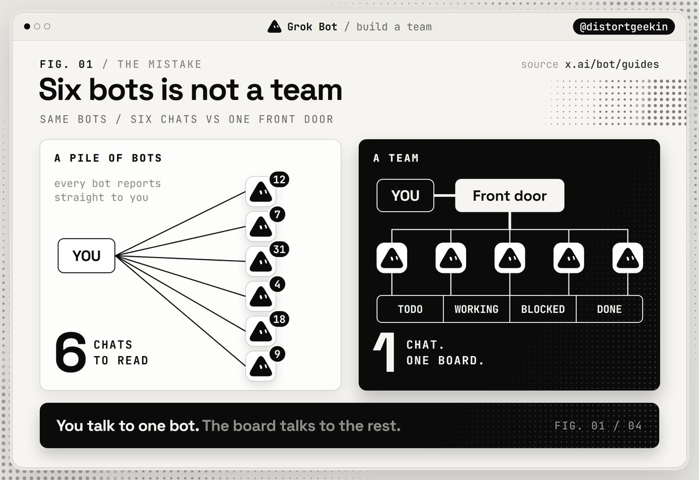
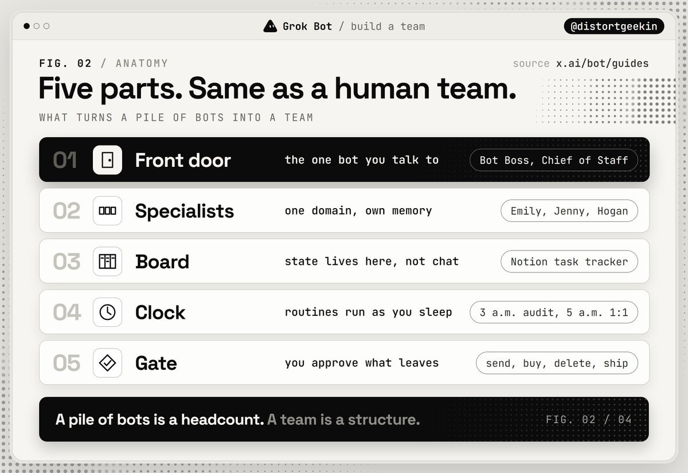
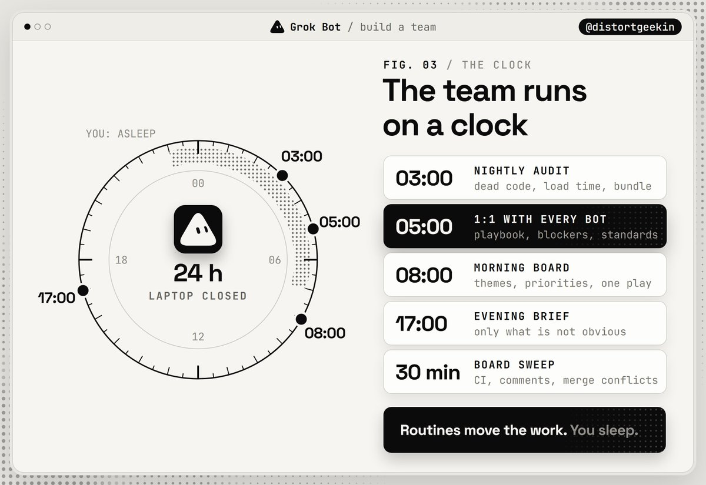
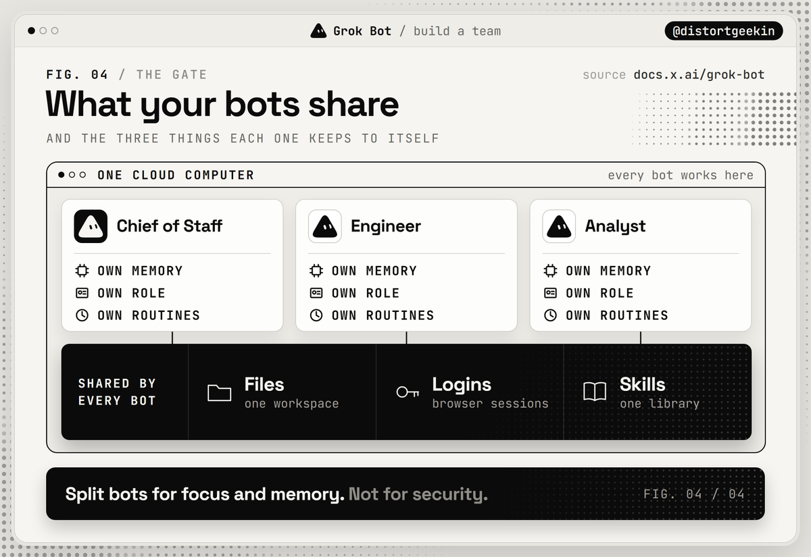

西堂 picks · 19/24
Grok Bot: How to Build Your First AI Team (Full Guide)
@distortgeekin · distort · Sat Oct 10 12:30:19 +0000 2026

One engineer on the Grok Bot (xAI's AI assistant that comes with its own computer) team went from running 15 cloud agents at a time to more than 200 at once.
Not with 200 bots. With six.
Five engineer bots, each owning one domain, and one ops bot that does not write a single line of code. On the same team, Lauren Tan shipped 2,000+ PRs in a month.
That is the part most people miss. Their first bot works, so they add a second, then a fifth, then a tenth. Now they have ten chat windows and a new full-time job: reading them.
A pile of bots is a headcount. A team is a structure. This guide is the structure, taken from how xAI's own people run theirs.

The 30-second version
- One bot is a hire. A team needs five things: a front door, specialists, a board, a clock and a gate.
- You talk to one bot. It routes work to the rest.
- Every specialist owns one domain and keeps its own memory.
- Work lives on a board, not in a chat.
- Routines move the work while you sleep. Approvals decide what is allowed to leave.
- xAI's own teams run this with about six bots. Not sixty.
Part 1. When to hire bot number two
Not when the first one is busy. Bots do not get busy the way you do.
Kevin Niparko runs a full bot team as a PM at SpaceXAI, and his guide gives three reasons for splitting work across bots: referenceability ("You know who does what"), parallelism, and scoped memory.
The third one is the real answer. In his words:
Chief of Staff should not be debugging computer-use evals.
Hire bot number two when one bot's memory starts holding two jobs.
You will see it before you can name it. The inbox bot starts answering in the voice of your code reviewer. Calendar preferences leak into research briefs. You open every message by reminding the bot which hat it is wearing today.
Lingxi Li, who builds Grok Bot with Grok Bot, says the same thing from the engineering side: bots "perform best when focused on a single domain".
The test: skill or bot?
The docs define a skill as "a reusable set of instructions for how to do a task", and your private skills are one library shared by all your bots.
So a new task is a skill. A new domain with its own memory is a bot. If you cannot name the domain in three words, you do not need another bot yet.
Part 2. The five parts of a team

1. The front door
One bot you actually talk to. Josh Kim's guide calls it Bot Boss, the "single front door". Niparko calls it Chief of Staff and describes it in two sentences: "The only generalist. Stays quiet if nothing changed."
The front door routes. It does not build. Kim's own prompt says it plainly: "you are hub and spoke EA, not a builder and not an auditor".
A prompt you can copy:
You are my Chief of Staff and the only bot I talk to. Route every request to the specialist that owns it, collect the result, check it against what I asked for, and report back in five lines. Stay silent if nothing changed.
2. The specialists
Niparko's roster: a Chief of Staff, an engineering manager called Emily, five engineer bots, a data analyst, a PM bot and a recruiter. Li's roster: five engineer bots split by surface (iOS, desktop, infrastructure, Android, the harness) plus Jenny, head of operations.
Look at what both teams have in common. A manager that does not do the work. Emily breaks tasks down, delegates and checks the output against the goal. Jenny onboards new bots and runs postmortems. Neither one writes code.
For a first team, three specialists is enough. Eric Zakariasson caps every project channel at six bots and calls the cap "just an arbitrary number". Arbitrary, and correct.
3. The board
Chat scrolls away. A team needs one place where the state of the work lives.
Li's team uses a shared tracker in Notion (a notes and database app). Every 30 minutes the bots check each PR for failing CI, review comments and merge conflicts. Problems go back to Working. Clean ones move to Ready for Review.
Zakariasson runs two databases, Projects and Tasks, with one channel per project. A bot that gets stuck marks its task Blocked and pings the human. The rest of the time the human just watches cards move.
The best line in any of the guides is from that one:
The interesting part is that the more I build on this, the more it resembles a system initially built for humans.
4. The clock
A routine, per the docs, "tells one Bot when to run a workflow". Each bot can hold up to 50 of them, they can fire as often as every five minutes, and they keep running with your laptop closed.
Li's clock looks like this. At 3 a.m. the nightly audits run: dead code, load time, bundle size. At 5 a.m. Jenny holds a 1:1 with every bot on the team, reviews the playbook and surfaces blockers. The reported result: the bots "rarely forget my complex workflows, even after many weeks".
That 5 a.m. standup is the most underrated idea in the whole setup. A bot's context is limited. Repetition is how a team keeps its standards, and here a bot does the repeating so you do not have to.

5. The gate
Niparko, on what still needs a human:
I still keep final review for any external email sends, purchasing anything, or destructive actions like deletes.
Kim goes further. The inbox bot is read-only and never sends anything until the word "send" is typed in that moment.
Two facts from the docs that change how you design the gate:
- Background approvals expire. When a routine or another bot triggers an action that needs your yes, the request lapses after about 10 minutes and the action does not run. A 3 a.m. job that waits for you will die waiting. Decide in advance: either write an allow rule for it, or make the routine stop at a draft.
- All your bots share one cloud computer. Files, browser sessions and logins are available across the whole roster. The docs say it directly: do not treat separate bots as a security boundary.
You split bots for focus and memory. You get safety from the gate.

Part 3. Build it in five days
Day 1. The front door. Promote your first bot to Chief of Staff with the prompt above. From now on it is the only chat you open.
Day 2. Split by memory. List everything bot one does today and group the list by domain. The two biggest groups become your first two specialists. A bot's settings are three fields: Name, Title, Description. Fill them in like a job posting.
Day 3. The board. One table with Task, Owner and Status: Todo, Working, Blocked, Ready for Review, Done. Then tell every bot the same thing: nothing is done until the board says so, and if you are stuck, set Blocked and ping me.
Day 4. The clock. Three routines to start: a morning board from the Chief of Staff, a 30-minute sweep of the board, and one nightly audit. Run each as a test first on safe input. The docs warn that a test run "performs real work".
Day 5. The gate. Write the ask-first rules: sending, purchasing, deleting, publishing, anything in production. Add one allow rule for the action you have already approved five times in a row.
Then leave it alone for a week before you hire bot number four.
Five mistakes that kill a bot team
The clone army. Five copies of the same generalist. No scoped memory, no domain, no gain. You multiplied the cost and kept the confusion.
The group chat with no board. Bots can message and trigger each other. Without shared state, that is a meeting, not work.
The builder boss. A front door that starts doing the tasks itself. The moment your Chief of Staff writes the code, nobody is routing and nobody is checking.
The open listener. A trigger on every new message. The docs warn against exactly this because it creates noise and burns usage. Match narrowly.
The security illusion. Believing the finance bot cannot see what the research bot logged into. Same computer, same sessions.
The org chart is the product
The people building Grok Bot did not invent a new architecture for their own teams. They rebuilt the oldest one there is: a manager, specialists, a board, a standup and a sign-off.
The difference is that this team holds its standup at 5 a.m. and nobody complains.
Start with the front door. Add one specialist. Do not add a third until the board exists.
P.S. If you have not hired the first bot yet, start with my previous guide, "Grok Bot: How to Hire Your First AI Employee". Everything quoted here comes from xAI's public Grok Bot guides and docs.
Source: https://x.com/distortgeekin/status/2108897917729738810
← Grok Bot: How to Hire Your First AI Empl 如何让 Grok Bot 更安全，这是你一安装好就设置的。 →